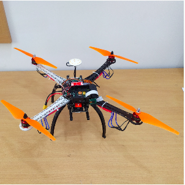

-

Hexacopter 1
Multipath equipped Hexacopter-1 prototype supported with two cellular networks.
-

Hexacopter 2
Multipath equipped Hexacopter-2 prototype supported with two cellular networks.
-

Quadcopter 1
Multipath equipped Quadcopter-1 prototype supported with two cellular networks.
-

Quadcopter 2
Multipath equipped Quadcopter-2 prototype supported with two cellular networks.
MUT-DROCO Prototypes.
© Copyright © 2022.MUT-DROCO all rights reserved